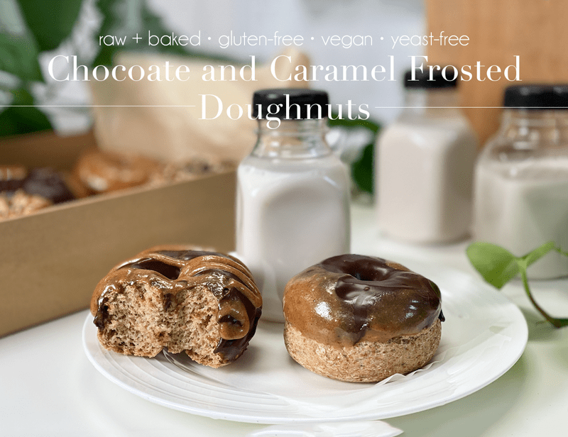
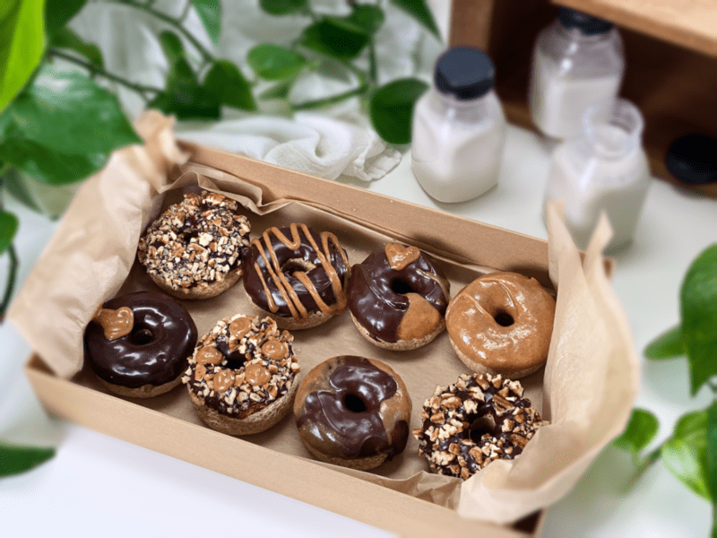
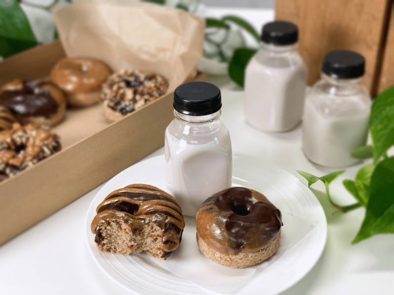
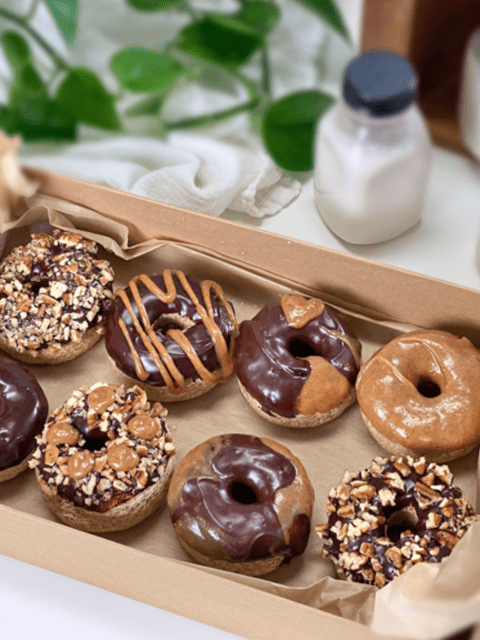
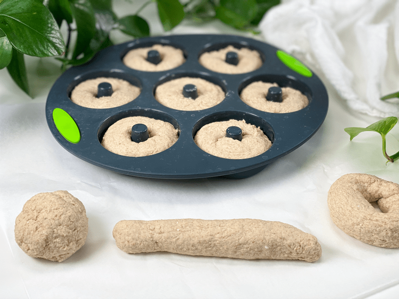
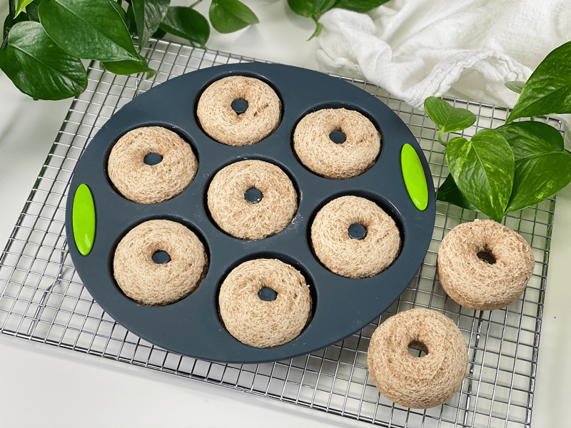
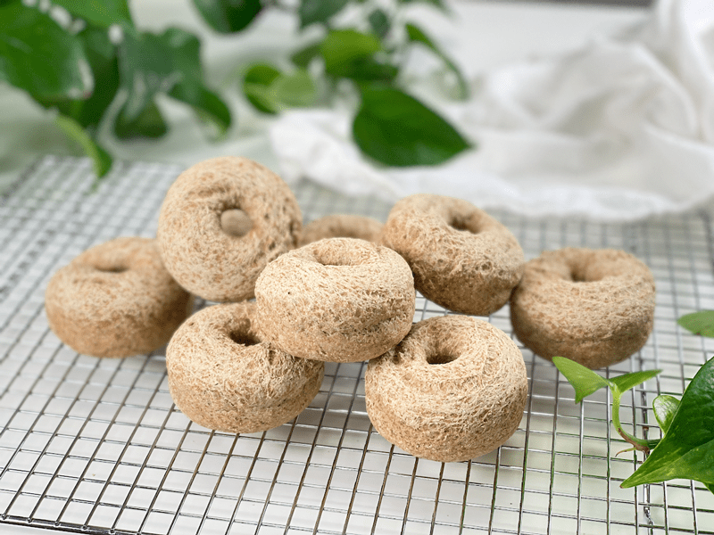
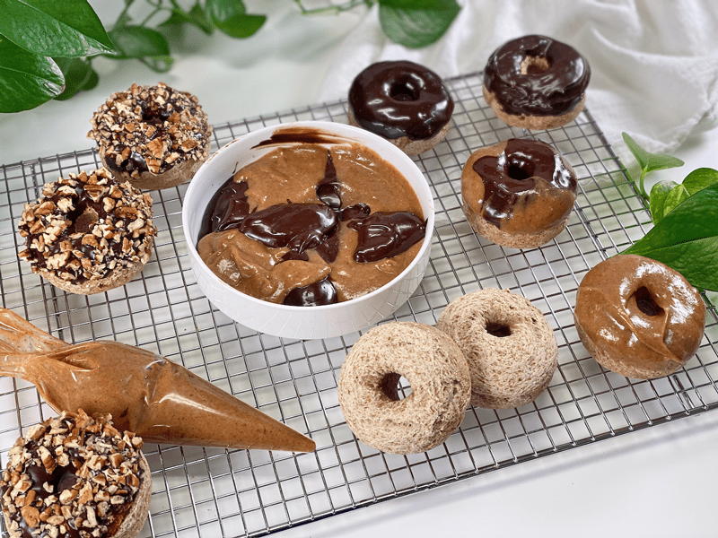
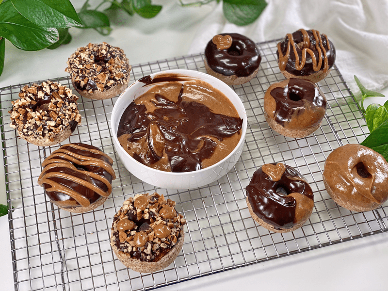

Chocolate and Caramel Frosted Doughnuts | Fusion of Baked and Raw
In the world of doughnuts, they say that you are either a cake doughnut person or a yeast one. How about a bread-like doughnut? I am not here to say that I invented a new form of doughnut; perhaps unconventional is more like it. While preparing the dough to make bread today, I decided to try making doughnuts with the batter. The end result turned into a delicious, chewy, hearty doughnut smothered with a rich, raw, vegan, chocolate ganache and caramel frosting, making them the perfect weekend treat with a cup of coffee and the Sunday newspaper.

It’s my firm belief that one can never have too much fun in the kitchen. When I swing open the pantry doors, I am met with a “painter’s palette” of options. What to make? What to make? That is the never-ending question that lives rent-free in my brain. Today, as I mentioned above, I decided to try making doughnuts from one of my bread recipes. Bob’s snack surpluses were running low, and I wanted to get ahead of it — along with my leotard and cape, it makes me look like a superhero when I can pull out a delicious and nutritious treat when a craving hits!

What You Will Need
Doughnut Bread (see below)
- I used the same ingredients as I did for my Everyday Sandwich Bread with a FEW minor tweaks. If you want a detailed run-down on the ingredients, pop over there for a second and scan through them.
- Doughnut Pan: Since I bake oil-free, I love using silicone baking pans. Click (here) to see the pans that I use. If you don’t own a doughnut pan or want to purchase one, you can shape these by hand and bake on a cookie sheet. The centers might close up as they rise, but the flavor and texture will remain.
Chocolate Ganache Frosting
- This is one of my all-time favorite raw vegan frostings. It is SO easy to make, tastes amazing, and can be used in countless ways. You will find the recipe (here).
- It’s possible that you will have a little extra ganache left over. If this is the case, it can be stored in the fridge for several weeks or it can be frozen (doesn’t freeze solid).
Caramel Frosting
- It’s amazing what happens when you combine almond butter and Medjool dates. With a few extra ingredients and about 10 minutes of time, you will have an exquisite raw vegan caramel frosting on your hands. You can find the recipe (here).
- Should you have any left over, save it to dip apple slices in — heaven!

Decorating Ideas
My suggestion is to be free-spirited about the decorating process. As long as you make the two frostings, you can’t go wrong. You dip each doughnut in a single frosting, you can marble the two together, you can drizzle the frosting . . . on and on. You get the picture. Chopped nuts are also a creative addition. See my pictures for simple ideas.

Ingredients
Yields 10 (1/3 cup or 85 g) each
Doughnut Bread
- 1 cup (100 g) gluten-free rolled oats, ground
- 3/4 cup (100 g) sorghum flour
- 1/2 cup (100 g) raw hulled buckwheat, ground
- 5 Tbsp (40 g) arrowroot powder
- 1 tsp (4 g) baking powder
- 1/2 tsp (3 g) baking soda
- 1 tsp (6 g) sea salt
- 2 Tbsp (44 g) maple syrup
- 2 cups (16 oz) water
- 5 Tbsp (30 g) psyllium whole husks
Frosting
Preparation
Psyllium Gel
- Quickly whisk the water and psyllium husk powder in a mixing bowl. It will instantly start to gel, which is to be expected. Set aside while you prepare the remaining ingredients, so it can thicken.
- Preheat the oven to 350 degrees (F).
- Line a baking sheet with parchment paper, sprinkled with a little extra flour.
Dry Ingredients
- In the mixing bowl that we are going to knead the bread in, whisk together the oat flour, sorghum flour, buckwheat flour, arrowroot, baking soda, baking powder, and salt.
- If you have a sifter, use that to thoroughly incorporate all the dry ingredients.
Mixing the Dough
- Add the psyllium gel and drizzle the maple syrup around the bowl.
- Using either a hand mixer or a free-standing mixer with dough attachments, knead for 5 minutes (set a timer on your phone) to ensure that it gets kneaded enough (don’t we all love feeling needed?).
- Start the mixer on low until the flour is folded in, then turn it up one speed. If you start off at too high a speed, the flour will jump out of the bowl.
- Shape 1/3 cup or (85 g) of dough into a round ball, then rolling it 7″ long between the palm of your hands. Wrap it into a circle shape, leaving a hole in the center, and place it in the silicone baking mold. Smooth the meeting ends of the dough together. Repeat until all the dough is used up.
- Score the tops of each donut with the tip of a sharp knife, going no more than 1/4″deep. This allows air to release during baking.
- Bake on the center rack for 40 minutes.
- Take the pan(s) out of the oven and once cool enough, pop the doughnuts out of the molds and place them on a cooling rack. If you want to eat them warm, dip them in the chocolate and/or caramel and enjoy. Otherwise, wait until they are cool, so the frosting doesn’t melt and slide off.
- Store in an airtight container for several days on the counter. Eat sooner than later.
-

-
Not so attractive, I know… but here are the 3 stages when creating the doughnut shapes: ball, rope, loop.
-

-
Once they are done baking, remove them from the pan and place on a cooling rack.
-

-
Once they are completely cool, you can start decorating them.
-

-
Be creative and have fun with the process.
-

-
Messy, but oh so delicious!
© AmieSue.com